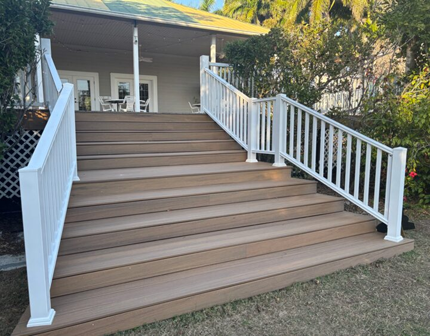

A generous grant has given the park a beautiful, lasting place to gather.
Some of the best things at Palma Sola happen because someone in our community decides to give. This is one of them.
Thanks to a generous grant from the Bishop Parker Foundation, the park's gathering deck has been completely rebuilt. The old boards have been replaced with durable composite decking — the kind that shrugs off Florida sun and summer rain, stays cooler underfoot, and will hold up beautifully for years without the constant upkeep that wood demands.

If you've been to a wedding here, taken a class in the shade, or just stood at the rail watching the gardens wake up in the morning, you know this spot. It's one of the places the park feels most like a gathering place — and now it's ready for many more years of them.
Thank you, Bishop Parker Foundation. Gifts like this are what keep ten acres of botanical park open, free, and growing for everyone in Manatee County. We're grateful — and we can't wait to welcome you out to see it.
Every event hosted on this deck helps support the park that stays free to the public, 365 days a year. Come see what's new — and stay a while.